free · for windows
a tiny pixel cat
that keeps you moving.
it lives in the corner of your screen, nudges you to stretch and drink water, helps you plan the day, and keeps a little journal. everything stays on your computer.
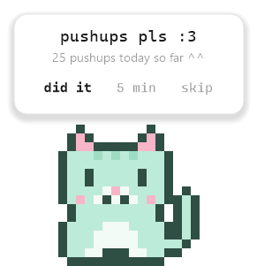
what it does
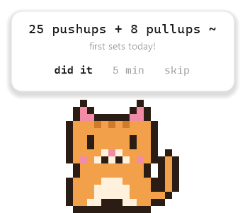
moves, not guilt
pushups, squats, stretches, water: you pick the routine, the cat brings it at the right moment. sets that land together come as one bubble. it waits during calls and fullscreen apps, and time away from the computer counts as a break.
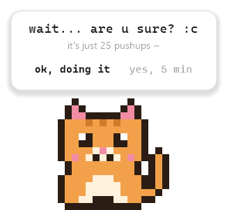
a gentle push back
snooze or skip and it asks “are u sure? :c”, once. then it respects your answer. if you keep skipping something, it asks whether it should come less often, and never changes anything without you.
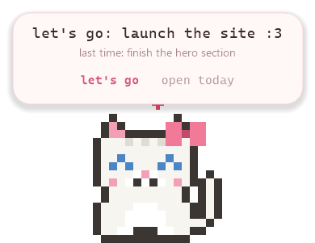
one thing a day
a goal for the day, a stretch goal and time-boxed tasks with a quiet timer. jot quick notes from anywhere with ctrl alt n, then sort them in a two-minute wrap-up that writes your journal.
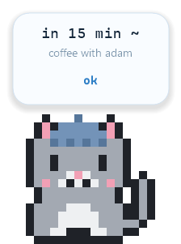
dates that matter
coffee with a friend, a launch deadline: put them on the calendar and they show up in your morning check-in. timed events get a heads-up 15 minutes before.
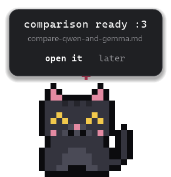
a brain, if you want one
connect the free hermes agent and ask your cat for real work: compare two things, pull the key ideas out of a video, draft a post. answers land as files in its home, and open in a calm reader. completely optional.
make it yours
nine cats, seven themes, a bow or a beanie.
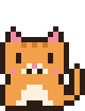
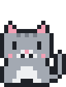
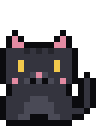
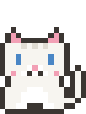
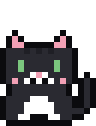
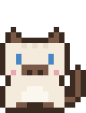
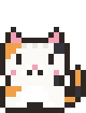
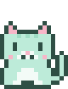
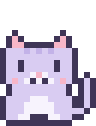
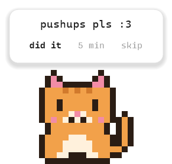
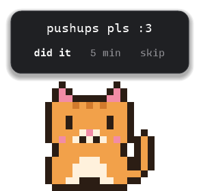
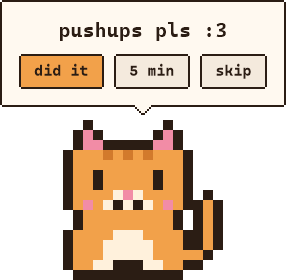
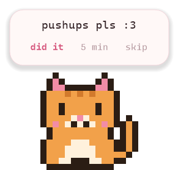
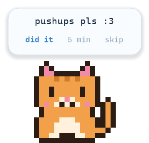
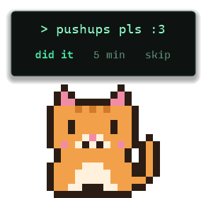
a calm dashboard
today, the week's goals, the journal and calendar, reminders. it opens in its own window, in the same theme as your cat.
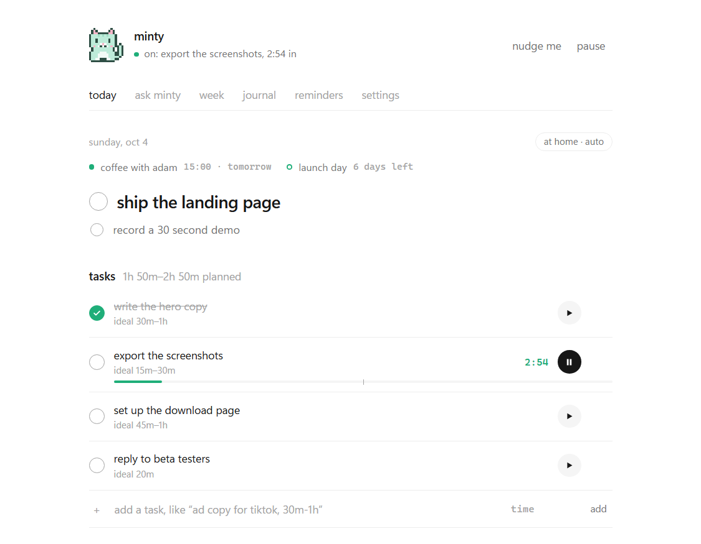
yours, and only yours
- no account, no tracking, no ads.
- your data is one file on your computer, with a daily backup.
- it only goes online to check for updates, and for the ai brain if you connect it.
- updates are signed, so nobody else can slip in a fake one.
how to start
- download the zip and unzip it.
- put the app in a folder you'll keep, like documents\hello everynyan. not in downloads: “start with windows” remembers where it lives.
- double-click it. windows may say “windows protected your pc”, because the app isn't signed with a paid certificate yet. click more info, then run anyway. it only asks once.
- adopt your nyan :3 setup takes a minute. after that, it keeps itself up to date.
questions
is it free?
yes.
does it work on mac?
not yet. windows 10 and 11 only, for now.
does it need the internet?
no. it checks for updates now and then, and the optional ai brain uses the internet. everything else works offline.
why does windows warn me the first time?
apps from small makers aren't signed with a paid certificate yet, so windows smartscreen is careful with them. download it only from this page. once it's installed, updates come signed and don't trigger the warning again.
will it bother me during calls or games?
no. it stays quiet while your microphone is in use or a fullscreen app is open, outside your work hours if you set them, and when you pause it. you can also hide the cat and bring it back from its icon near the clock.
how do i uninstall it?
right-click the cat's icon near the clock, choose quit, then delete the app. your data lives in %appdata%\HelloEverynyan if you want to remove that too.